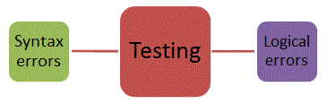

<div id="jsn-maincontent" class="span9 order1 row-fluid">
  <div id="jsn-maincontent_inner">
    <div id="jsn-centercol">
      <div id="jsn-centercol_inner">
        <div id="jsn-mainbody-content" class="jsn-hasmainbody">
          <div id="jsn-mainbody-content-inner1">
            <div id="jsn-mainbody-content-inner2">
              <div id="jsn-mainbody-content-inner3">
                <div id="jsn-mainbody-content-inner4" class="row-fluid">
                  <div id="jsn-mainbody-content-inner" class="span12 order1">
                    <div id="jsn-mainbody">
                      <div id="system-message-container"></div>

                      <div
                        class="item-page"
                        itemscope
                        itemtype="https://schema.org/Article"
                      >
                        <meta itemprop="inLanguage" content="en-GB" />

                        <div itemprop="articleBody">
                          <p></p>
                          <h1 style="text-align: center">
                            Syntax, logic and runtime errors
                          </h1>
                          <p>
                            <strong>Introduction</strong><br />Programmers
                            rarely write perfect programs the first time round.
                            They can make mistakes, which either stop the
                            program from being translated from source code into
                            object code, or which does translate into object
                            code but gives the incorrect answer when the code is
                            executed. Programmers need to know what sort of
                            errors they might expect and also how to track them
                            down.
                          </p>

                          <p style="text-align: center">
                            
                          </p>
                          <p>
                            <strong>Syntax errors</strong><br />Sometimes, when
                            you tell your Integrated Development Environment
                            (IDE) to translate a program from source code to
                            object code, you get some error messages. The
                            translator (whether it is a compiler or an
                            interpreter) cannot convert the code. This is
                            because the rules of the programming language you
                            are using have been broken. It might be that you
                            have not spelled a 'reserved word' correctly. It
                            might be that you haven't used a ' reserved word' in
                            the correct way. (A 'reserved word' is a word that
                            is used by the programming language - you are not
                            allowed to use it as an identifier.) Perhaps you
                            missed out a colon or a semi-colon in your code.
                          </p>
                          <p>
                            <strong>Syntax rules</strong><br />Consider the
                            English sentence, 'The dog bites the man.' This
                            follows the rules for the English language. The
                            sentence has a capital letter at the start and a
                            full stop at the end. All the words have been
                            spelled correctly. All the words are in the correct
                            order (we haven't written for example, 'dog the man
                            the bites.' The first sentence follows the 'syntax
                            rules' for the English language. The second sentence
                            doesn't.
                          </p>
                          <p>Consider part of a program we have written:</p>
                          <p style="margin-left: 30px">
                            <strong>WRITE "Press C to continue"</strong
                            ><br /><strong> READ KeyPress</strong><br /><strong>
                              WHILE (KeyPress NOT EQUAL TO C) DO</strong
                            ><br /><strong> BEGIN.</strong><br /><strong
                              >&nbsp; &nbsp; &nbsp;WRITE "Press C to
                              continue"</strong
                            ><br /><strong
                              >&nbsp; &nbsp; &nbsp;READ KeyPress</strong
                            ><br /><strong> END</strong><br /><strong>
                              ENDWHILE</strong
                            >
                          </p>
                          <p>
                            When we wrote this program, it looked like it was
                            going to work but when we tried to compile it, it
                            wasn't translated into object code. We got an error
                            message back from the error diagnostics tools,
                            saying that there was a problem around the BEGIN
                            statement. If we look carefully, we can see a full
                            stop. This shouldn't be there. It breaks the rules
                            for using the reserved word 'BEGIN'. You are not
                            allowed to put a full stop after BEGIN. This is an
                            example of a 'syntax error'.
                          </p>
                          <p>
                            Compilers and translators check the syntax of a
                            program. If they find a problem, the 'error
                            diagnostics tools' try to help. If an error is
                            found, the error diagnostics report it by displaying
                            an error message and attempts to indicate where the
                            error is in the program. Some problems that
                            programmers often face when using error diagnostics,
                            however, are:
                          </p>
                          <ul>
                            <li style="list-style-type: none">
                              <ul style="list-style-type: disc">
                                <li>
                                  error messages from the error diagnostics
                                  tools are often difficult to understand
                                </li>
                                <li>
                                  one error can cause lots of other errors to be
                                  displayed, even though there are no other
                                  errors
                                </li>
                                <li>
                                  a reported error is sometimes not at the place
                                  where the 'error diagnostics' tools say it is
                                  - you have to look carefully just before and
                                  just after that position.
                                </li>
                              </ul>
                            </li>
                          </ul>
                          <p>
                            <strong>Logical errors</strong><br />Sometimes, a
                            programmer will write a statement where the syntax
                            is perfectly correct and the translators translate
                            the source code into object code correctly. However
                            the wrong answer is given when the program is run!
                            This type of error is known as a 'logical error'.
                            They can be quite hard to spot unless a program is
                            tested thoroughly.
                          </p>
                          <p>For example, if a programmer wrote this:</p>
                          <p style="margin-left: 30px">
                            <strong>MonthsInYear = 13</strong><br /><strong>
                              Average = Total / MonthsInYear</strong
                            >
                          </p>
                          <p>
                            and compiled it, it would compile and run okay. It
                            would give you an answer. However, it would give an
                            incorrect answer (there are only 12 months in a
                            year).
                          </p>
                          <p>Another example - if a programmer wrote this:</p>
                          <p style="margin-left: 30px">
                            <strong>a = b + c</strong>
                          </p>
                          <p>
                            and compiled it, it would compile and run okay.
                            However, it would give an incorrect answer because
                            the programmer meant to write:
                          </p>
                          <p style="margin-left: 30px">
                            <strong>a = b - c</strong>
                          </p>
                          <p>
                            These are examples of 'logical errors'.<strong
                              >&nbsp;</strong
                            >
                          </p>
                          <p>
                            <strong
                              >Run-time errors and arithmetic errors</strong
                            ><br />As with logical errors, a program with these
                            types of errors can be translated without an error
                            being discovered. Unlike logical errors, however,
                            the program will stop running and a run-time error
                            will be displayed. A typical example of a run-time
                            error is when a division by zero occurs in a
                            calculation. Dividing by zero is a meaningless
                            calculation. Impossible arithmetic operations that
                            result in errors are also called arithmetic errors.
                            Another run-time error would occur when a program
                            has run out of memory. There is a fixed amount of
                            RAM in any computer. Some of it will be used for the
                            operating system and the rest will be used for
                            applications and data files currently needed by the
                            CPU. If the CPU can’t run a program because there is
                            not enough memory available to store temporary
                            values, for example, then it will display a run-time
                            error message and stop working.
                          </p>
                          <p></p>
                        </div>
                      </div>
                    </div>
                  </div>
                </div>
              </div>
            </div>
          </div>
        </div>
      </div>
    </div>
  </div>
</div>
